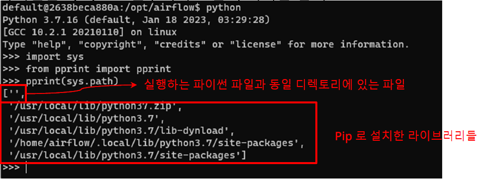
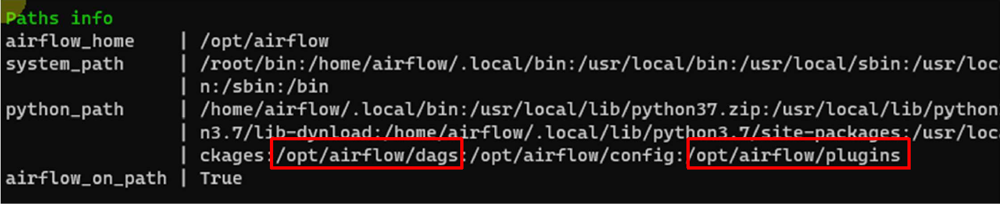
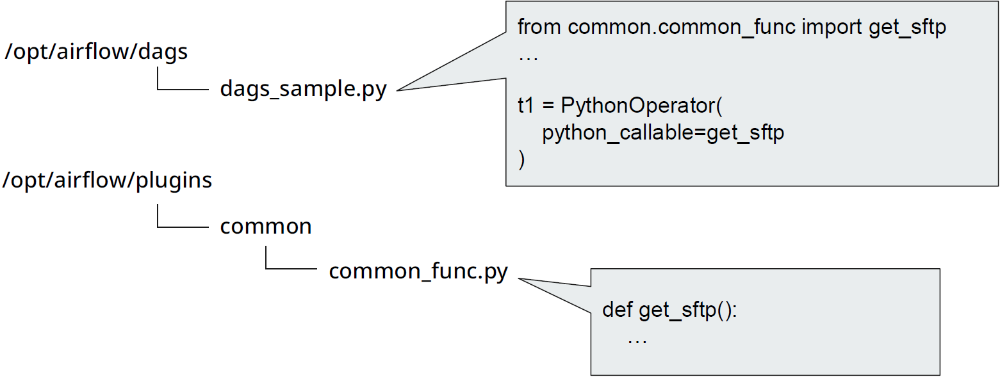
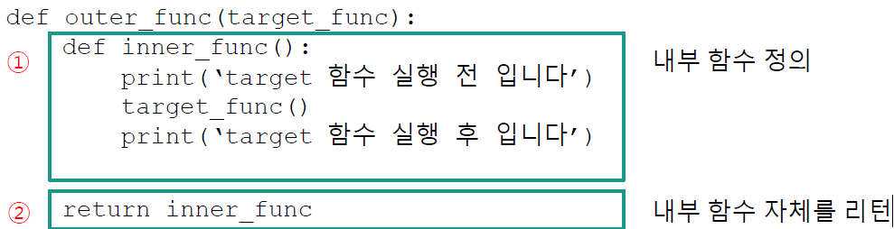
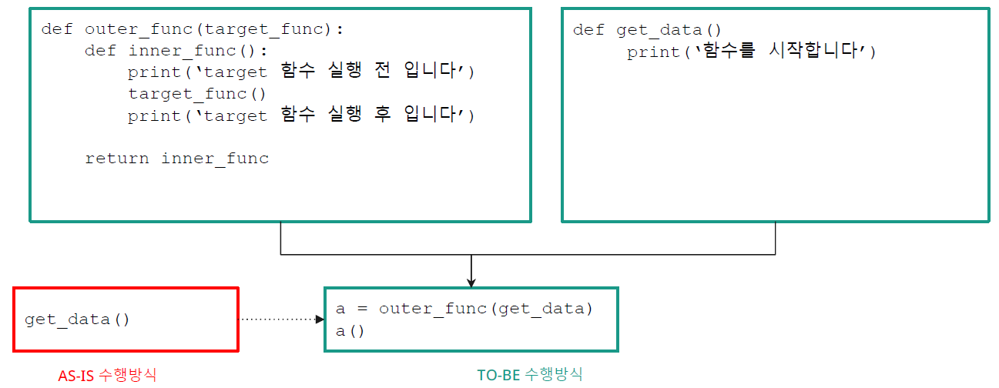
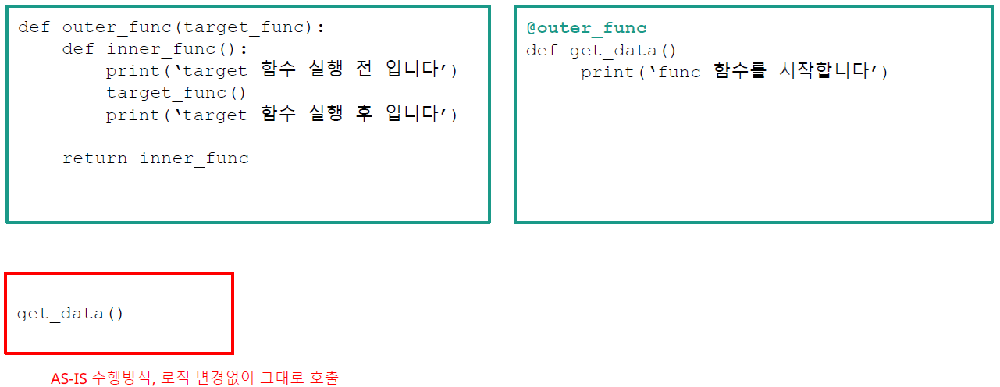
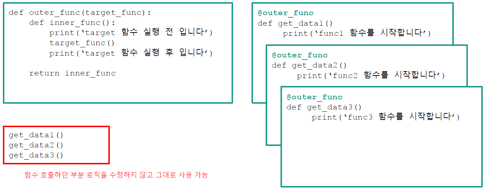
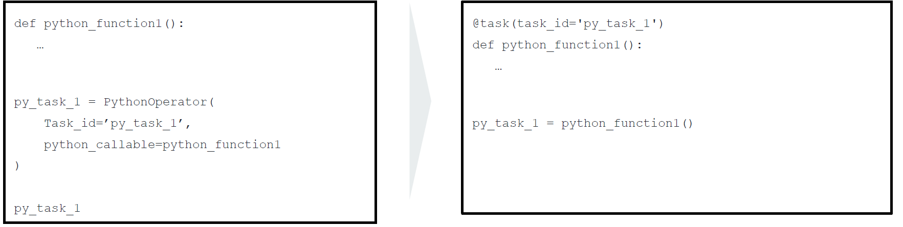

Python Operator
DAG Creation, Bash Operator, Task Performance Subject,
Engineering
template
Author
Kwangmin Kim
Published
May 1, 2023
- import libraries
from {package name} import {operator or class name}\(\rightarrow\)from airflow.operators.python import PythonOperator
- 정의된 파이썬 함수를 실행시키는 오퍼레이터
- 가장 많이 쓰이는 오퍼레이터
from airflow.operators.python import PythonOperator- Airflow 폴더 아래 operators 폴더 아래 python 파일 아래에서 PythonOperator 클래스를 호출하라는 의미
- python이 경로 찾는 방식을 알아놔야 함
- dag에서 우리가 만든 외부 함수를 import 해와야 하는데
- import 경로를 python이 찾을 수 있도록 그 문법에 맞게 작성해야함
파이썬은 sys.path 변수에서 모듈의 위치를 검색
- pip install로 설치된 libraries 
- conda 환경에 설치된 libraries
::: {.cell execution_count=1}
{.python .cell-code} #import sys #pprint(sys.path):::['c:\\Users\\kmkim\\Desktop\\projects\\website\\docs\\blog\\posts\\Engineering\\airflow', 'c:\\Users\\kmkim\\.conda\\envs\\study\\python39.zip', 'c:\\Users\\kmkim\\.conda\\envs\\study\\DLLs', 'c:\\Users\\kmkim\\.conda\\envs\\study\\lib', 'c:\\Users\\kmkim\\.conda\\envs\\study', '', # 실행하는 파이썬 파일과 동일 디렉토리에 있는 파이썬 파일, 이것에 한해서 그냥 모듈명으로만 호출 가능 # 예를 들어, a.py 와 b.py와 동일한 디렉토리안에 있다면 a.py안에서 `import b` 라고 해도 호출 가능 'c:\\Users\\kmkim\\.conda\\envs\\study\\lib\\site-packages', 'c:\\Users\\kmkim\\.conda\\envs\\study\\lib\\site-packages\\win32', 'c:\\Users\\kmkim\\.conda\\envs\\study\\lib\\site-packages\\win32\\lib', 'c:\\Users\\kmkim\\.conda\\envs\\study\\lib\\site-packages\\Pythonwin']sys.path 에 값을 추가하는 방법
- 명시적으로 추가 (ex:
sys.path.append(‘/home/hjkim’)) - OS 환경변수 PYTHONPATH 에 값을 추가
- 명시적으로 추가 (ex:
다행히, 파이썬에서와 같이 귀찮은 방식보다는 Airflow에서는 자동적으로 dags 폴더와 plugins 폴더를 sys.path에 추가함
- 컨테이너에서
airflow info명령을 수행해보면 아래 그림과 같은 정보를 확인할 수 있다. 
- 컨테이너에서
plugins 폴더 이용하기 
- plugins까지는 airflow에서 기본적으로 인식하고 있기 때문에
from common.common_func import get_sftp에서와 같이common부터 경로 써주면 됨.
- plugins까지는 airflow에서 기본적으로 인식하고 있기 때문에
파이썬 스크립트를 이용하면 좋은 점
- 공통함수 작성이 가능해지고
- 재활용성이 증가하고
- DAG의 가독성이 올라가고
- 디버깅에도 용이하다.
PythonOperator 예시
- dags_python_import_func.py
from airflow import DAG import pendulum import datetime from airflow.operators.python import PythonOperator from common.common_func import get_sftp # 여기서 path 가 맞지 않아 local에서 error가 발생 # .env 파일을 만들어서 workspace 경로 설정을 해줘야 한다. import random with DAG( dag_id="dags_python_import_func", schedule="30 6 * * *", #montly batch: 매월 1일 08:00에 시작 start_date=pendulum.datetime(2023, 6, 13, tz="Asia/Seoul"), catchup=False ) as dag: get_sftp_task = PythonOperator( task_id ='get_sftp_task', python_callable=get_sftp ) get_sftp_task- .env: wsl airflow directory에는 배포될 필요없는 파일이기 때문에 .gitignore에 추가해도 됨
- python에 있는 기능
- 데커레이터(Decorator): 장식하다, 꾸미다
- What: 함수를 장식하다
- python 함수를 좀 더 쉽게 사용할 수 있다.
- 원래의 함수를 감싸서 (Wrapping) 바깥에 추가 기능을 덧붙이는 방법
- 파이썬은 함수 안에 함수를 선언하는 것이 가능하고
- 함수의 인자로 함수를 전달하는 것이 가능하며
- 함수 자체를 리턴하는 것이 가능하다.
- warpping (함수 감싸기 )
- 파이썬은 함수 안에 함수를 선언하는 것이 가능
- 함수의 인자로 함수를 전달하는 것이 가능
- 함수 자체를 리턴하는 것이 가능 
- 함수 감싸기 예시
get_data()함수 안에 log를 쌓아야하는 상황
- log는 간단하게 여기서
print('target 함수 실행 전 입니다.')와print('target 함수 실행 후 입니다.')라고 설정 get_data()함수 안에 log를 쌓는 python code를 작성하는 것이 아니라get_data()를 인수로 받는 warpping function,outer_func(target_func)을 만든다
- wrapping 함수의 장점
get_data()와 같은 target function이 수 백개가 되면 수 백개의 log정보를 수 백개의 target functions에 기입해야한다. wrapping 함수를 사용하면 코드의 재사용이 가능해진다.
- wrapping 함수의 장점
get_data()와 같은 target function이 수 백개가 되면a=outer_func(get_data1);a(),a=outer_func(get_data2);a(), \(\dots\),a=outer_func(get_data100);a()이런식으로 만들어야 함.
- 이런 상황을 보완한 것이 decorator
- decorator 
@outer_func을 target function위에 작성
- 이렇게, decoration을 하게 되면
get_data1();get_data2();get_data3()만 실행하면 자동으로outer_func()이 실행됨 
- task decorator in airflow
- airflow에도 비슷한 기능이 있는데 파이썬 함수 정의만으로 쉽게 Task 생성 
- airflow official document에서는 PythonOperator Import해서 DAG을 만드는 것 보다 task decorator를 사용하는 것을 더 권장
- 실제로, airflow web service에서
example_python_operatorDAG을 보면example_python_deocartor라고 이름이 안지어졌는데도 decorator 예시가 바로 나옴. - 왜냐면, 나중에 task간에 data를 공유할 때 task decorator를 사용하면 PythonOperator를 사용하면 data 공유가 한결 더 쉬워진다.
- task decorator를 사용하면 task connection 을 작성할 필요가 없어짐
- task decorator dag 예시
from airflow import DAG import pendulum from airflow.decorators import task with DAG( dag_id="dags_python_decorator", schedule='0 2 * * 1', #매주 월요일 2시 실행 start_date=pendulum.datetime(2023, 6, 13, tz="Asia/Seoul"), catchup=False, ) as dag: @task(task_id="python_task1") def print_context(some_input): print(some_input) python_task1 = print_context('task decorator execution!') - 실제로, airflow web service에서
- 일반적인 함수 인자 작성 방법
- But, 호출하는 로직에서 몇 개의 파라미터를 넘길지 모를 때는 또는 파라미터의 개수를 제한하지 않으려면?
- 또는 선택적으로 변수를 받을 수도 있을 때는? (가령 주소, 전화번호)
- 파이썬 함수에서 인수 형태는 크게 3가지가 있음
- 일반 변수 형태를 명시적으로 받는 것:
name,sex - *argument 방식:
*args - **keyword_arguement 방식:
**kwargs
- 일반 변수 형태를 명시적으로 받는 것:
regist('gdhong','man')은name='gdhong'과sex='man'regist('gdhong','man','korea','seoul')은name='gdhong'과sex='man'.'korea','seoul'는*args가 catch한다. 이 경우에,name과sex는 필수 정보*args는 부가 정보의 개념args로 들어온 값은 tuple 저장된다.args에서 값을 꺼낼 때는 인덱스를 이용한다 (ex:args[0],args[1])args라는 이름 외 다른 이름으로 받아도 됨 (ex:some_func(*kk):)- 함수의 인수에 여러 값을 줘도 잘 작동하는 이유
- *,** 가 없는 인수는
name과sex로 고정 되어 있기 때문에 아무리 많은 인수값이 오더라도 첫 2개는name과sex에 무조건 할당 됨 나머지 인수값 중'key':'value'형태가 아닌 것은 모두*arg에'key':'value'인 것은**kwargs에 할당된다.
- *,** 가 없는 인수는
1 Python Operator
1.1 Python Operator Types
| Package | Operator | Importance | Description |
|---|---|---|---|
| airflow.operators.python | PythonOperator | *** | 어떤 파이썬함수를실행시키기 위한오퍼레이터 |
| BranchPythonOperator | * | 파이썬 함수 실행 결과에 따라 task를 선택적으로 실행시킬 때 사용되는 오퍼레이터. task1 >> [task2, task3] 와 같은 상황에서 BranchOperator에서 task1을 실행시키고 task2와 task3 중 하나를 택하여 실행시킬 수 있는 operator | |
| ShortCircuitOperator | 파이썬 함수 실행 결과에 따라 후행 Task를 실행하지 않고 dag자체를 종료시킬 수 있는 오퍼레이터 | ||
| PythonVirtualenvOperator | 파이썬 가상환경 생성후 Job 수행하고 마무리되면 가상환경을 삭제해주는 3개의 과정을 실행시켜 주는 오퍼레이터 | ||
| ExternalPythonOperator | 기존에 존재하는 파이썬가상환경에서 Job 수행하게 하는 오퍼레이터 |
2 Import Python External Module
2.1 Python Module Path
2.2 plugins directory 이용
2.3 Execute Python External Modules
3 Task Decorator
4 Python Operator with op_args Parameter
4.1 Python Function Parameter
def regist(name, sex):
print(name)
print(sex)
regist('kkm','man')4.2 Arguement: *arg
def regist(name, sex, *args):
print(type(args)) #tuple로 되어 있음
country = args[0] if len(args)>=1 else None #부가 정보가 없을때는 error가 발생하기 때문에 조건문을 달아줌
city = args[1] if len(args)>=2 else None
regist('gdhong','man')
regist('gdhong','man','korea','seoul')4.3 Argument: **kwargs
def some_func(**kwargs):
print(type(kwargs)) # dictionary
print(kwargs)
name = kwargs.get('name') or '' #dictionary 값을 얻을 때는 get() 씀
country = kwargs.get('country') or ''
print(f'name:{name}, country:{country}')
some_func(name=’hjkim’, country=’kr’)
방어 로직
딕셔너리에서 dict['name'] 시도시 name 이라는 키가 없을 때 에러가 발생합니다. 이 때 dict.get('name') 으로 시도하면 name 이라는 키가 없을 때 에러나지 않고 None이 반환되어 상대적으로 안전합니다. dict.get('name') or '' 의 의미는 name 이라는 키가 있으면 value를 꺼내오고 키가 없으면 빈 문자 열('')을 받는다는 의미합니다.
4.4 Mixed Usage: *arg & **kwargs
def regist(name, sex, *args, **kwargs):
print(name)
print(sex)
print(args)
print(kwargs)
regist('hjkim', 'man', 'korea', 'seoul', phone=010, email='hjkim_sun@naver.com')4.5 Python Operator: op_args Usage
4.5.1 함수에 일반 변수만 있을 경우
def regist(name, sex):
print(f'이름은 {name}이고 성별은 {sex}입니다')
python_task = PythonOperator(
task_id='python_task',
python_callable=regist,
op_args=['hjkim','man'] #list로 작성되고 regist()의 인수값으로 사용된다.
#'hjkim'과 'man'은 각 각 regist()의 name과 sex에 할당된다.
)4.5.2 함수에 일반 변수 + *args도 있을 경우
4.5.2.1 Common Function Example
def regist(name, sex, *args):
print(name) # string 형태로
print(sex) # string 형태로
print(args) # tuple 형태로 출력 됨
python_task = PythonOperator(
task_id='python_task',
python_callable=regist,
op_args=[‘hjkim’,’man’,’kr’,’seoul’] # ‘hjkim’,’man’ 는 name과 sex에 ,’kr’,’seoul’는 *args에 할당된다.
)4.5.2.2 DAG
from airflow import DAG
import pendulum
import datetime
from airflow.operators.python import PythonOperator
from common.common_func import regist
with DAG(
dag_id="dags_python_with_op_args",
schedule="30 6 * * *",
start_date=pendulum.datetime(2023, 3, 1, tz="Asia/Seoul"),
catchup=False
) as dag:
regist_t1 = PythonOperator(
task_id='regist_t1',
python_callable=regist,
op_args=['hjkim','man','kr','seoul']
)
regist_t14.5.3 함수에 *args만 있을 경우
4.5.3.1 Common Function Example
def regist(*args):
print(args) # tuple 인 ('hjkim','man','kr','seoul')
python_task = PythonOperator(
task_id='python_task',
python_callable=regist,
op_args=['hjkim','man','kr','seoul'] # 모두 *args에 할당된다.
)4.5.3.2 DAG
4.5.4 Python Operator op_kwargs Usage
4.5.5 함수에 일반 변수만 있을 경우
def regist(name, sex):
print(f'이름은 {name}이고 성별은 {sex}입니다')
python_task = PythonOperator(
task_id='python_task',
python_callable=regist,
op_kwargs={'name':'hjkim','sex':'man'} #dictonary 형태로 작성
# regist(name,sex)의 argument 가 name, sex이고 op_kwargs의 key 값에 regist(name,sex)의 argument를 똑같이 작성해준다.
)4.5.6 함수에 일반 변수 + *kwargs도 있을 경우
def regist(name, sex, **kwargs):
print(name)
print(sex)
print(kwargs) # dictionary 형태로 출력됨
python_task = PythonOperator(
task_id='python_task',
python_callable=regist,
op_kwargs={'name':'hjkim','sex':'man',\
'country':'kr','city':'seoul'} # op_kwargs의 key값 중 name과 sex는 regist()의 인수명과 일치하므로 자동적으로 연결되어 regist()의 name과 sex에 할당되고 country와 city는 **kwargs에 할당된다.
)4.5.7 함수에 *kwargs도 있을 경우
def regist(**kwargs):
name=kwargs['name'] or ''
sex=kwargs['sex'] or ''
country = kwargs['country'] or ''
city = kwargs['city'] or ''
print(f'name은 {name}이고, \
성별은 {sex}이고, \
국가는 {country} 이고, \
도시는 {city} 입니다.')
python_task = PythonOperator(
task_id='python_task',
python_callable=regist,
op_kwargs={'name':'hjkim','sex':'man',\
'country':'kr',city:'seoul'}
)4.5.8 함수에 args,kwargs 모두 있을 경우
def regist(name, sex, *args, **kwargs):
print(name)
print(sex)
print(args)
print(kwargs)
python_task_2 = PythonOperator(
task_id='python_task_2',
python_callable=regist,
op_args=['hjkim','man','kr','seoul'], #name='hjkim', sex='man',**args=('kr','seoul')
op_kwargs={'phone’:010,'email':'hjkim_sun@naver.com'} #**kwargs={'phone’:010,'email':'hjkim_sun@naver.com'}
)